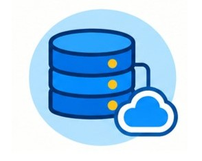

Componentes Curriculares y Módulos
Lógica de Programación

Desarrollo del pensamiento lógico mediante algoritmos, estructuras de control y estrategias para el análisis y solución de problemas computacionales.
Programación Estructurada

Fundamentos para la construcción organizada de programas mediante secuencias, condiciones, ciclos y funciones.
P. Orientada a Objetos

Construcción organizada de programas mediante secuencias, estructuras condicionales, ciclos y funciones, orientada al desarrollo de soluciones eficientes.
Arquitectura de Computadores

Comprensión de la estructura, componentes y funcionamiento de los sistemas de cómputo y su relación con la ejecución del software.
Diseño Web

Desarrollo de interfaces web mediante HTML y CSS, integrando estructura, estilos, organización visual y adaptación a diferentes dispositivos.
Lenguajes de Programación

Desarrollo de soluciones mediante JavaScript, Java, Python, PHP y SQL, integrando programación, desarrollo web, procesamiento y gestión de datos.
Práctica Profesional

Integración de conocimientos y competencias técnicas mediante experiencias prácticas relacionadas con proyectos y contextos propios del sector productivo.
Metodologías Ágiles

Aplicación de principios y prácticas ágiles para la planificación, organización, desarrollo y seguimiento de proyectos de software.
Bases de Datos

Diseño, modelado y gestión de información mediante sistemas relacionales, asegurando la persistencia, integridad y seguridad de los datos.
Perfil del Egresado

Técnico en Programación de software capacitado para desarrollar aplicaciones, análisis, diseño, producción y verificación de productos informáticos.